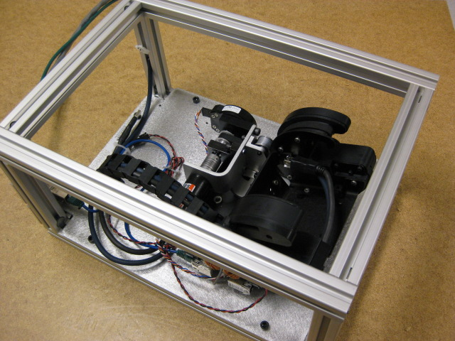

Install the caster in the test fixture, and secure the power/etherCAT from the test fixture into the caster. Use four bolts to attach the sled.
Connect the caster to the test cart's power cable using the attached female power cable. Connect the EtherCAT to the test cart connection using the M-to-M RJ-45 adapter.
Make sure the Hokuyo laser scanner is removed before running this test.
Do not drop with the Hokuyo installed.
Press 'Continue' to proceed.